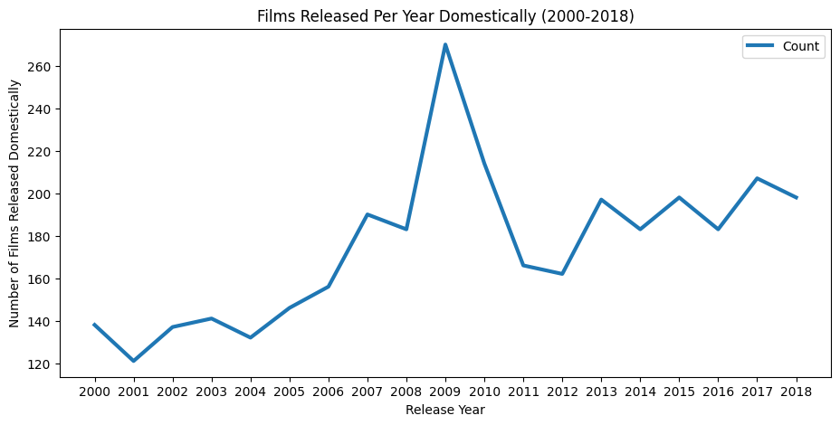
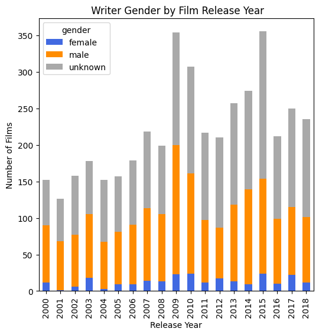

Topic: Gender Gap in The Film Industry Through the Years
Research
For this project, I am seeking to address the manner in which women have been represented in the film industry changed over time (roles, financing, Box office). How have these changes look when comparing films, not in English?
Motivation
My motivation in doing so relies mainly on the fact as someone who identifies as a woman of color, I have always seen a gender gap in environments in most professional spaces I come across ranging from higher education to the world of entertainment. Though I have seen such spaces become more gender inclusive with time, I wish to see how the film industry specifically has improved. Additionally, how has Hollywood worked to include non-English speaking countries through time?
In this project, I am using the “All_actors_movies_gender_gold” dataset provided by user taubergm on GitHub. Containing hundreds of rows of data from 2000 to 2018, this dataset features several variables such as Film titles, country/language, financials, and cast information such as lead actor or actress and most importantly their gender.
Data Exploration
As mentioned above this dataset is compiled of several variables such as Year and Date of Release, Film Name, Country, Budget/Gross (stop at September 2018), Film Runtime, Film Cast and Gender. This said, gender is categorized into a binary meaning cast members who may not feel identified by either category might be left out or misgendered. Additonally, it does not capture intersecting film cast identities such as gender and ethnicity.
Potential Data Visualizations (4):
1)Line plot of the number of films released 2000 - 2018
2)Box plot of film funding for women
3)Bar graph of language/country distribution in films
4)Line plot film budget over time (use average for each year)
year name country budget gross \
0 2000 Mission: Impossible 2 ['United States'] 125000000 546400000
1 2000 Mission: Impossible 2 ['United States'] 125000000 546400000
2 2000 Mission: Impossible 2 ['United States'] 125000000 546400000
3 2000 Mission: Impossible 2 ['United States'] 125000000 546400000
4 2000 Mission: Impossible 2 ['United States'] 125000000 546400000
... ... ... ... ... ...
20366 2018 Destroyer ['United States'] NaN NaN
20367 2018 Destroyer ['United States'] NaN NaN
20368 2018 Destroyer ['United States'] NaN NaN
20369 2018 Destroyer ['United States'] NaN NaN
20370 2018 Destroyer ['United States'] NaN NaN
runtime starring language released gender
0 123 Tom Cruise ['English'] 2000/05/24 male
1 123 Dougray Scott ['English'] 2000/05/24 male
2 123 Thandie Newton ['English'] 2000/05/24 female
3 123 Richard Roxburgh ['English'] 2000/05/24 male
4 123 John Polson ['English'] 2000/05/24 male
... ... ... ... ... ...
20366 123 Nicole Kidman ['English'] 2018/08/31 female
20367 123 Tatiana Maslany ['English'] 2018/08/31 female
20368 123 Sebastian Stan ['English'] 2018/08/31 male
20369 123 Toby Kebbell ['English'] 2018/08/31 male
20370 123 Scoot McNairy ['English'] 2018/08/31 male
[20371 rows x 10 columns]
## DATA VIZ 1: Line Plot of Films released 2000 - 2018import numpy as npimport matplotlib.pyplot as pltimport pandas as pdhwdata = pd.read_csv('https://raw.githubusercontent.com/taubergm/HollywoodGenderData/master/all_actors_movies_gender_gold.csv')film_year = hwdata.groupby('year').size().reset_index(name='Count')ax = film_year.plot(x='year', y='Count', kind='line', figsize=(12, 6))ax.set_title('Films Released Per Year, 2000-2018')ax.set_xlabel('Year')ax.set_xticks(range(2000, 2019))ax.set_ylabel('Number of Films Released')plt.show()

## DATA VIZ 2: Box plot: film funding for women, 2000-2017 (2018 not completed)#too much data, float64#fix error due to no data and ""hwdata['budget'] = hwdata['budget'].replace('[^0-9]', '', regex=True).astype(float)#filter, women datafemale_data = hwdata[hwdata['gender'] =='female']female_budget = female_data.groupby('gender')['budget'].median()ax = female_budget.plot(kind='box', figsize= (5,5))ax.set_title('Film Budget for films with female leads')ax.set_xlabel('Lead Gender')ax.set_ylabel('Budget (millions)')##FIX RANGE!!#ax.set_yticks(range.....plt.show()
TypeError: 'float' object cannot be interpreted as an integer
## DATA VIZ 3: Bar graph of language distribution in films#Need to filter languageslanguage_count = hwdata['language'].value_counts()plt.bar(language_count.index, language_count.values)plt.title('Film Language Distribution')plt.xlabel('Language')plt.ylabel('Number of Films')plt.show()

## DATA VIZ 4: Line plot film budget over time (use average for each year)hwdata['year'] = pd.to_datetime(hwdata['year'], format='%Y')budget_by_year = hwdata.groupby(hwdata['year'].dt.year)['budget'].mean()plt.plot(budget_by_year.index, budget_by_year.values)plt.xlabel('Year')ax.set_xticks(range(2000, 2019))plt.ylabel('Average budget (millions)')plt.title('Average Film Budget Over Time')plt.show()#fix label year & line plot itself
Beginnings of Analysis
Potential Data Visualizations:
1)Bar chart of number of films with men in lead roles per year
2)Bar chart of number of films with women in lead roles per year
3)Scatter plot comparing budget/revenue for non-english language films for films with women leads
4)Line plot of budget by country
## DATA VIZ 1: Bar chart of number of films with men in lead roles per year
## DATA VIZ 2: Bar chart of number of films with women in lead roles per year
## DATA VIZ 3: Scatter plot comparing budget/revenue for non-english language films for films with women leads